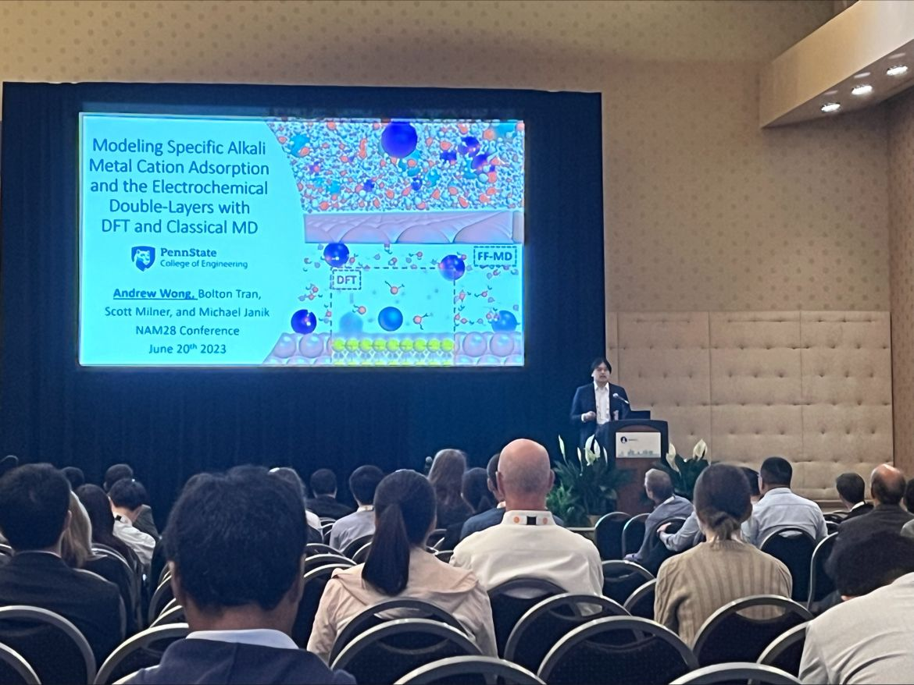

Presenting at the NAM28 2023 Conference
About Andrew
I am currently a rising 5th year Chemical Engineering Ph.D. candidate at Penn State University advised by Dr. Michael J. Janik. I obtained my Bachelor of Science in Chemical Engineering at Texas A&M University in May 2019 and graduated magna cum laude. I completed an internship at the Computational Chemistry and Material Science Summer Institute at Lawrence Livermore National Laboratory advised by Dr. Sneha Akhade.
My passion resides in using computational chemistry tools, such as DFT and Classical MD, to assist in the design of electrocatalysts for sustainable technologies while learning more about the fundamental intricacies of the electrode-electrolyte interface. I have contributed to the following research areas: electrochemical reduction of CO2, electro-oxidation of biomass, HER within Hydrogen Pumps, electro-reduction of nitroaromatics, and development of efficient models for electrocatalysis.
My research interests are electrocatalysis, interfaces, DFT, molecular dynamics, sustainable renewable energy technologies, and inclusive education. My website provides my research portfolio and computational analysis tools for electrocatalysis developed during my Ph.D.
I am interested in a post-doctoral position to broaden my research skills to ultimately pursue a career in academia at either a national laboratory or university to study solid-liquid interfaces. Feel free to reach out at my socials below or my email at ajwongphd@gmail.com. Thank you for visiting my page!